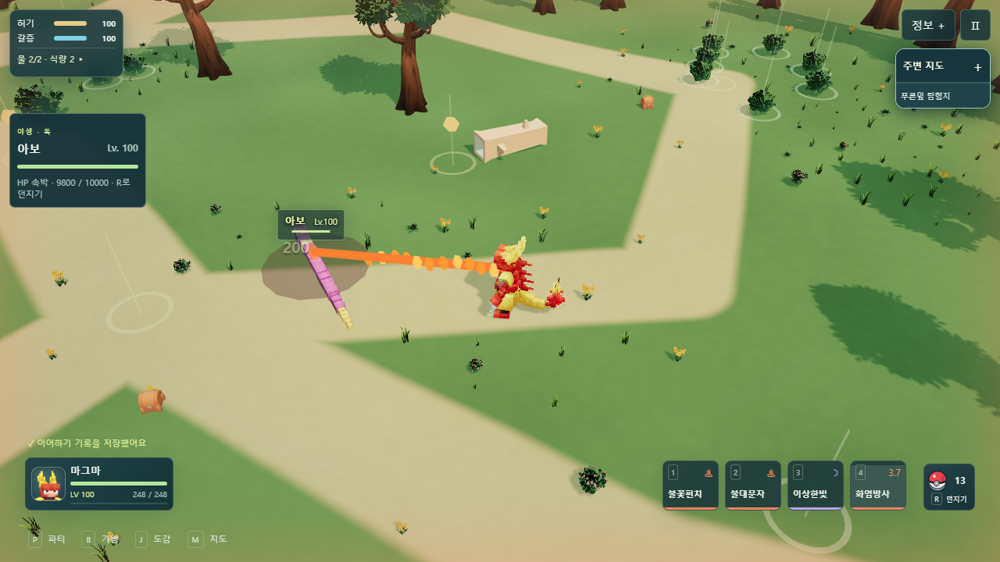
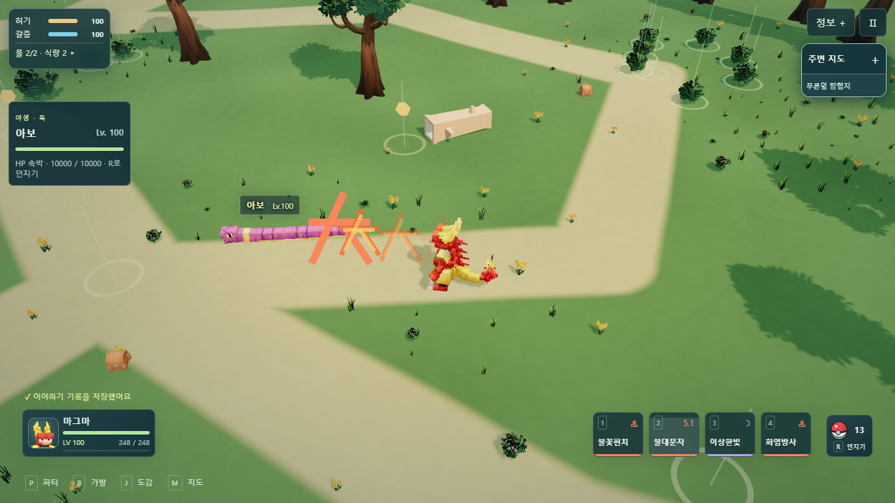
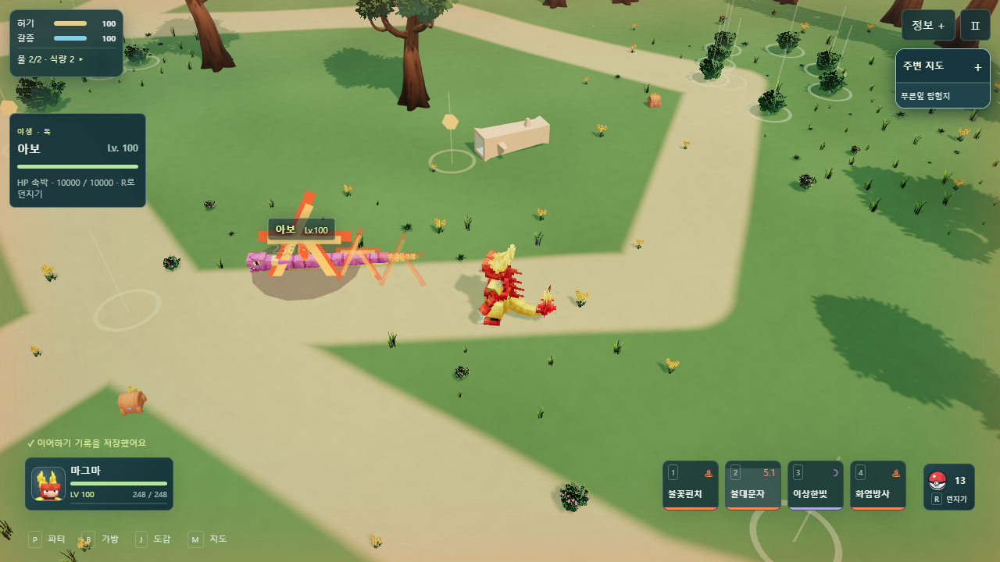
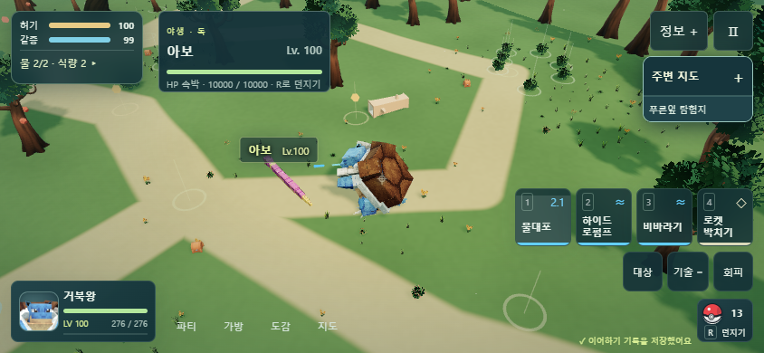
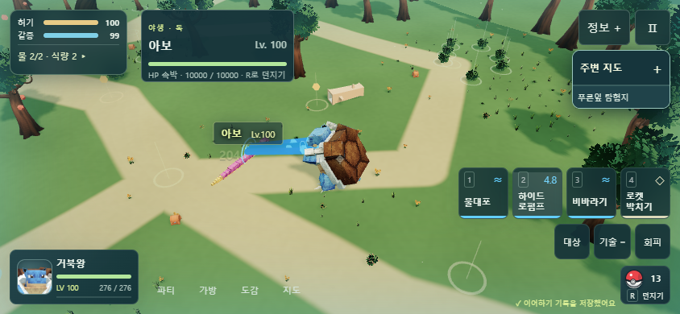

기술마다 다른 효과
실제로 배운 기술을 사용하는 분리 검수 장면입니다. 전투 수치는 그대로 유지했습니다.

화염방사 · 이어지는 불꽃 줄기
불대문자 · 큰 大자 불꽃 발사체
불대문자 · 명중 시 확산하는 불꽃과 大자거품 · 떠가는 거품 방울, 쌍포 연출이 섞이지 않음
물대포 · 작은 물줄기와 물방울
하이드로펌프 · 굵은 고압 물줄기와 거북왕의 쌍포검수 보고서 · TCG HUB에서 게임하기